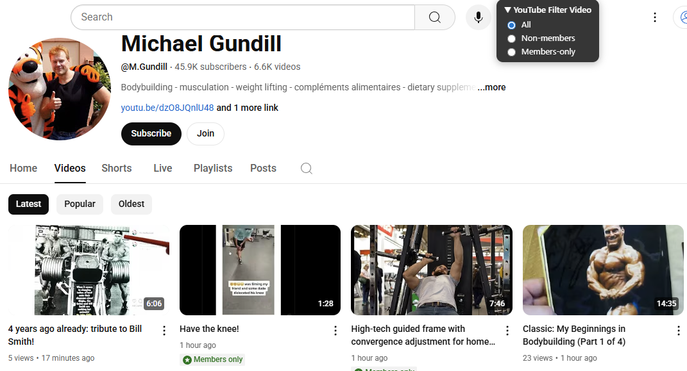
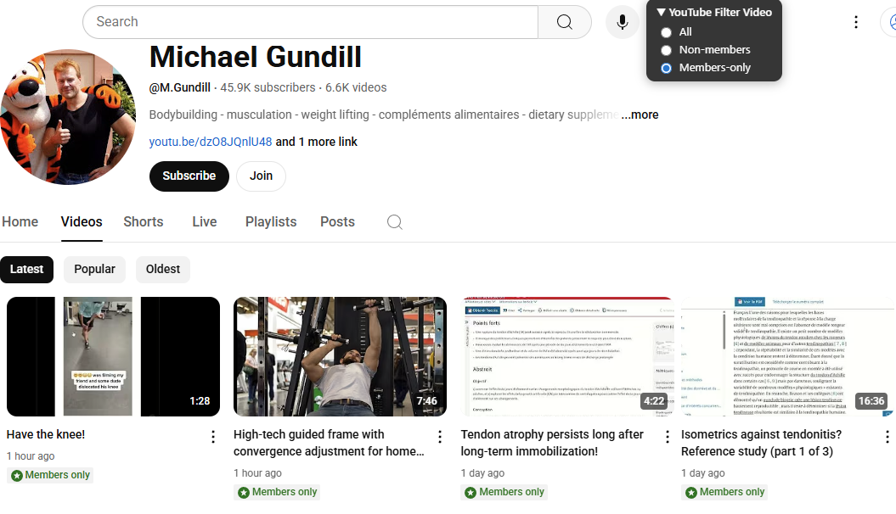

Avec la récente mise à jour de YouTube, il n’est plus possible de distinguer les vidéos réservées aux membres.
C’est pourquoi cette extension de navigateur a été créée : elle permet de filtrer les vidéos directement sur les chaînes des créateurs.
Sur les onglets Vidéos, Shorts et En direct, un petit panneau s’affiche en haut de la page,
offrant trois options de filtrage :
All : toutes les vidéos
Non-members : uniquement les vidéos accessibles aux non-membres
Members-only : uniquement les vidéos réservées aux membres


L’extension a été testée sur Chrome et Firefox,
mais elle devrait également fonctionner avec d’autres navigateurs basés sur Chromium comme Edge ou Opera.
Cependant, leur procédure d’installation n’est pas détaillée ici.
⚠️ Cette extension n’est pas disponible via les Stores officiels : une installation manuelle est nécessaire,
mais elle reste simple à effectuer.
Décompressez le fichier dans le dossier de votre choix.
Chrome
Accédez à la page chrome://extensions dans un nouvel onglet.
Ou bien, cliquez sur l’icône puzzle du menu Extensions, puis sur Gérer les extensions.
Vous pouvez aussi passer par le menu Chrome → Plus d’outils → Extensions.
Activez le mode développeur.
Cliquez sur Charger l’extension non empaquetée et sélectionnez le dossier où vous avez décompressé l’extension.
Firefox
Ouvrez la page about:debugging.
Cliquez sur Ce Firefox, puis sur Charger un module complémentaire temporaire….
Sélectionnez n’importe quel fichier dans le dossier de l’extension.
Le module est alors installé et restera actif jusqu’au redémarrage de Firefox. ⚠️ Il faudra donc répéter l’installation à chaque redémarrage de Firefox.